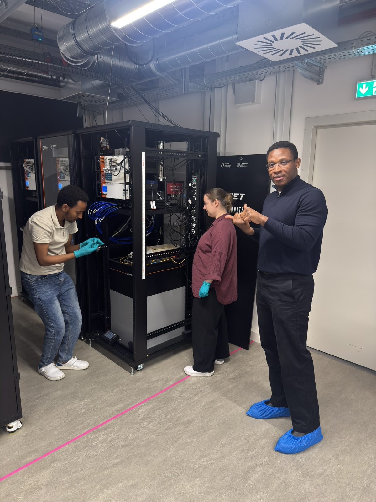
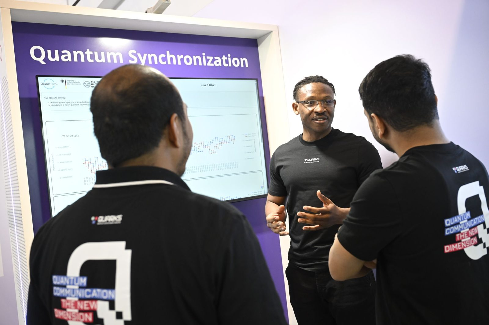
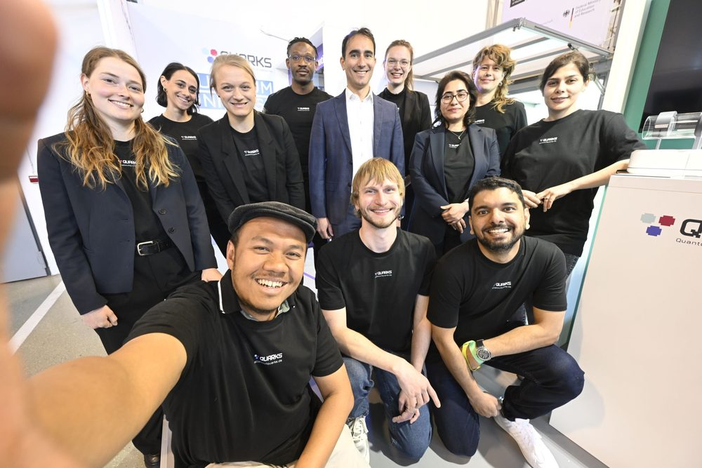
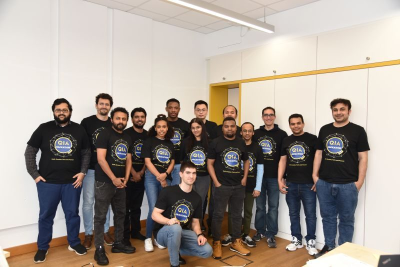
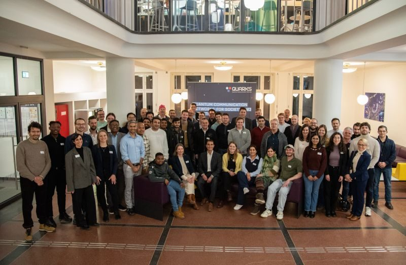
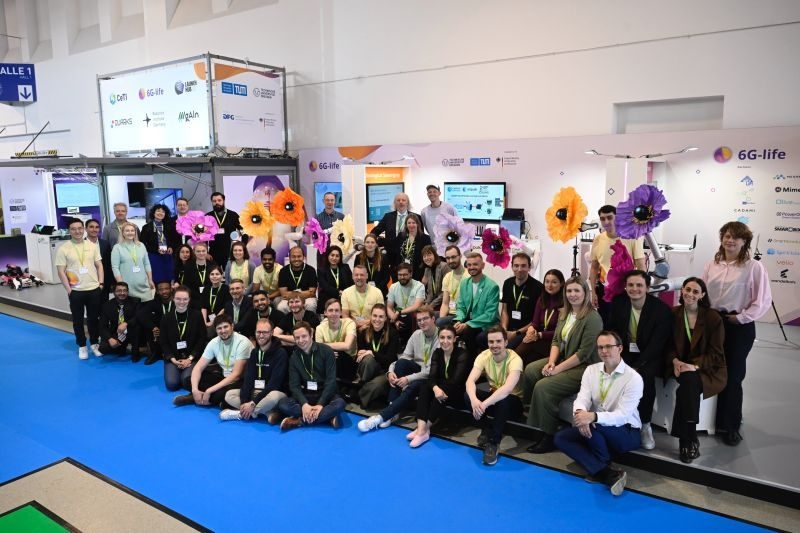

Dr.-Ing., Quantum Communication
Technische Universität Dresden
I am Buniechukwu Njoku, known as Bunie, a network engineer and researcher. I work on making quantum communication operational.
I started in production networks. At Nokia I spent three years deploying and migrating carrier IP/MPLS infrastructure: 400+ network elements commissioned, optical backbone capacity raised from 10/40 to 100/400 Gbit/s, and 25+ live traffic migrations with near-zero service impact. Carrier work sets a high bar for calling something finished. Someone who did not build the system should be able to operate it, and its failure behaviour should be understood.
After a master's in advanced electronic systems at the Université de Bourgogne, I joined the Deutsche Telekom Chair of Communication Networks at TU Dresden. I build the protocols, timing and orchestration software that let our quantum testbed be operated like a normal network.
The testbed is a three-node hybrid quantum-classical framework built on quantum-dot entanglement sources. The nodes are relocatable, have integrated cryogenics, and sit in standard telecom racks. Synchronization derived from entanglement reaches picosecond precision in simulation, and on top of that we run a quantum-secured architecture for privacy-preserving AI, where federated learning traffic is protected with keys generated on the quantum plane. Three patent applications with Deutsche Telekom T-Labs came out of the timing work.
I also have a view on where the field's effort should go. Record fidelity and distance results get the attention, while the questions that decide adoption get much less: what a repair process for a quantum link looks like, what guarantees a provider can write into a contract, and who operates the equipment once the physicists leave the room. Those questions are why I moved from deployment into research, and I find them more interesting than the next record.
ComNets, the quantum lab, and the people in it.






Technische Universität Dresden
Université de Bourgogne, graduated with honours (bien)
Federal University of Technology, Owerri
My networking foundation is BGP, OSPF and IS-IS routing, MPLS with traffic engineering, QoS design and VXLAN/EVPN, built up in carrier practice across Cisco, Juniper and Nokia platforms. The same years taught me to lean on gNMI/gRPC and SNMP telemetry for observability, and on packet-level fault isolation when a migration starts going wrong.
In the lab that stack supports research. I write the photon-event processing and orchestration services for the QD-CamNetz testbed in Python and Go, and use Ansible and Jenkins to keep experiment pipelines reproducible. The control plane is packaged with Docker and Kubernetes. Designs are validated in simulated 5G environments with ns-3, Open5GS and UERANSIM before they reach hardware, and Precision Time Protocol underpins the synchronization work.
The newest area is distributed AI. I treat federated learning, secure aggregation and privacy-preserving AI as network problems, since they depend on scheduling, key material and transport security. They sit in the same toolbox as information reconciliation and privacy amplification.
Grouped by domain.
BGP, IS-IS, OSPF, SRv6, MPLS/MPLS-TE, VXLAN/EVPN, QoS, PTP, IPv4/IPv6
Firewalls, traffic filtering and access control (ACL, AAA), network hardening, security operations, information reconciliation, privacy amplification, post-quantum / harvest-now-decrypt-later mitigation
Entanglement utilization, entanglement-based QKD (BBM92), data/control-plane design, quantum-derived time and clock synchronization
Federated learning, privacy-preserving AI, secure aggregation, resource scheduling, control/data-plane API design, KPI evaluation
Python, Go, Ansible, Jenkins, REST APIs, protobuf, Git
gNMI/gRPC, NETCONF, streaming telemetry, Grafana, Prometheus, SNMP, LLDP, LACP, Wireshark
Linux, Nokia SR OS, Nokia NSP, Juniper Junos, Cisco IOS-XR, Docker, Kubernetes, Google Cloud
ns-3, Open5GS, UERANSIM, VMware